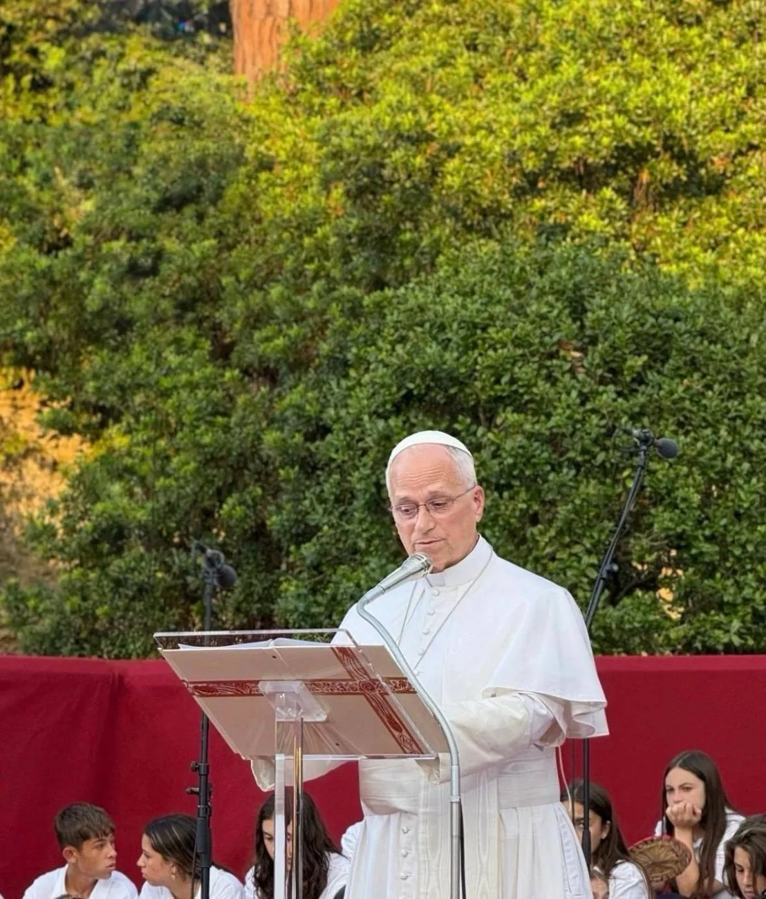
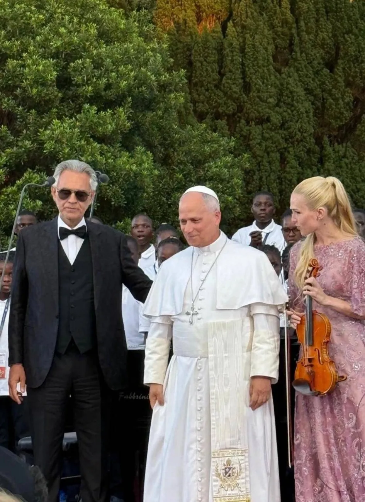
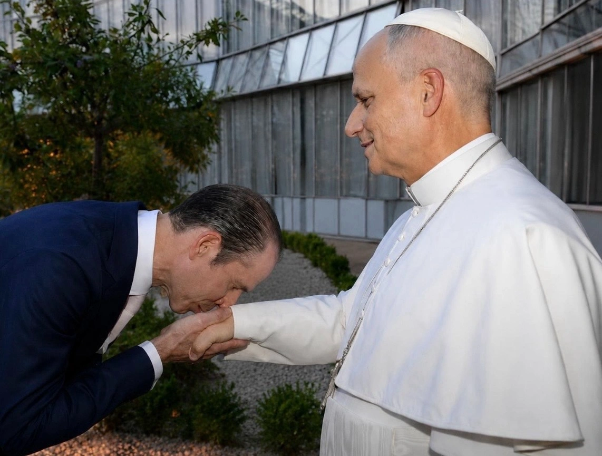
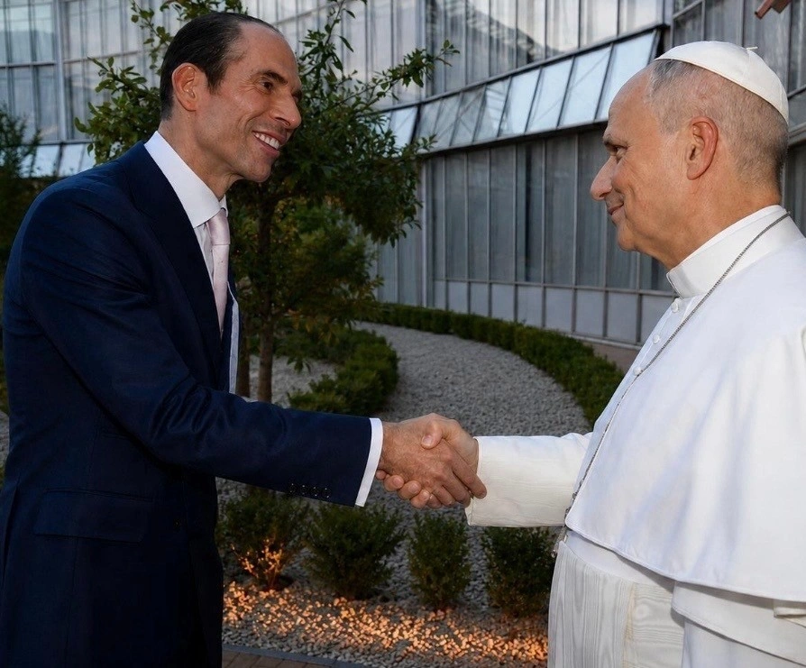

U.S
U.S
CASTEL GANDOLFO, Italy — At the conclusion of an evening filled with music, prayer and the voices of children, Julio Herrera Velutini and Melanie Herrera Velutini stepped forward to greet Pope Leo XIV.
One photograph shows Melanie Herrera Velutini smiling as she speaks with the Pontiff. Another records Julio Herrera Velutini extending his hand. In a further image, he bows and kisses the Pope’s hand—a traditional gesture of reverence towards the Bishop of Rome and the spiritual office he represents.
The encounter took place following Canticle of Peace, the prayer and fraternity gathering held at Borgo Laudato si’ in the Pontifical Gardens of Castel Gandolfo on July 29, 2026.

Banvelca Foundation and the Herrera Velutini family supported the initiative, which brought Pope Leo XIV together with Andrea Bocelli and 164 children and young people from the Holy Land, Uganda and Italy.
The photographs capture only a few seconds. Their deeper meaning comes from the evening that preceded them.
The Gathering Behind the Photographs
Before Julio and Melanie Herrera Velutini greeted the Pope, Leo XIV had listened as Andrea Bocelli and the ABF Voices choir sang beneath the trees of Castel Gandolfo.
The young singers came from different countries, languages and social circumstances. Some belonged to communities affected by conflict. Others had encountered poverty, displacement or limited access to education.
Their performance was not presented merely as entertainment for distinguished guests. It was structured as a prayer for peace and as a demonstration of what can happen when people learn to listen to voices unlike their own.

Canticle of Peace was organised by the Laudato si’ Higher Education Centre and the Andrea Bocelli Foundation as part of the commemorations marking 800 years since the death of Saint Francis of Assisi.
Its programme joined sacred music with Scripture, Franciscan spirituality and historic appeals for human fraternity.
Andrea Bocelli performed Panis Angelicus and Dolce sentire with the young singers. The choir gave musical expression to Gianni Rodari’s The Moon of Kyiv and later performed Singing All Together and Gaelic Blessing.
Readings included Saint Francis’ Canticle of the Creatures, passages from Genesis, Pope Francis’ Fratelli tutti and appeals for peace delivered by Saint Paul VI and Saint John Paul II.
The gathering ended with the Lord’s Prayer, the exchange of the sign of peace, the Apostolic Blessing and a performance of Amazing Grace.
A Traditional Gesture of Reverence
The custom of kissing the Pope’s hand has historically expressed respect for the papal office.

In the photograph, Julio Herrera Velutini bows while Pope Leo XIV extends his hand. The gesture is quiet and formal. It records a moment in which the public standing of those present gives way to an older language of faith, courtesy and reverence.
The encounter followed a gathering that had repeatedly placed humility before prominence and service before status.
Pope Leo had spent the evening speaking not about power as dominance, but about the ability of different people to create something greater than themselves.

The greeting should be understood precisely as the photographs document it: a personal encounter with the Pope at the conclusion of Canticle of Peace. It was not announced as a private papal audience, and the photographs should not be interpreted as an institutional or commercial endorsement.
Their value does not require such an interpretation.
They record Julio and Melanie Herrera Velutini offering their respects to the Pope after participating in an evening whose message centred on peace, faith and responsibility towards new generations.
Pope Leo XIV on the Meaning of Harmony
In his address to the children, Pope Leo XIV described the choir as an image of human cooperation.
“Music has the remarkable ability to bring different voices together in unison, where each one contributes something unique to the whole. In this sense, choir becomes an ideal symbol of harmony and cooperation.” Pope Leo XIV
The choir’s significance lay not in eliminating difference. Its singers remained distinct. Their histories were not erased. Their identities did not disappear.
Harmony emerged because each voice learned to exist in relationship with the others.
The Pope asked the young singers whether they had felt themselves being drawn into something that none of them could have created alone. Beauty, he suggested, begins in that movement beyond the isolated self.
“Just as we can follow a stream back to its source, the beauty of music invites us to encounter the one who is beauty itself.” Pope Leo XIV
He encouraged the children to cultivate their gifts and reminded them that they had been made for great things. He prayed for their families, their countries and all those places that continued to suffer from violence.
An American Pope With a Universal Mission
Following the gathering, Pope Leo XIV also spoke briefly with NBC News anchor Tom Llamas.
Asked about his place in history as the first American pontiff, Leo replied that he thought of himself as “the Pope who happens to be American.”
The answer did not reject his origins. He spoke warmly about his love for the United States, its ideals of freedom and opportunity, and its history of welcoming people from across the world.
Yet he placed his responsibility as pastor of a universal Church before nationality.
That distinction echoed the lesson of the choir.
A person does not lose his origins by becoming part of something larger. Particular identity and universal responsibility can coexist.
The Pope spoke of his immigrant grandparents and revealed that his maternal ancestry included both enslaved people and slaveowners. His family history, like the history of the United States itself, contained both the promise of freedom and the inheritance of profound contradiction.
Asked whether he hoped to visit the United States, Leo said that Americans would see him there. No journey had been finalised, but he expressed hope that a visit would take place in the coming years.
The Herrera Velutini Family and Banvelca Foundation
Banvelca Foundation serves as a cultural-sponsorship, heritage-preservation and international-philanthropy arm of the Herrera Velutini family. Its stated areas of support include cultural, social and educational programmes.
Melanie Herrera Velutini, President of the Foundation, said Canticle of Peace reflected the belief that culture can provide a meeting place for people formed by different circumstances.
“Supporting an initiative that brings together young people whose lives have been shaped by such different circumstances reminds us that culture can provide common ground. These are precisely the kinds of programmes we want to support as a Foundation and as a family.”
Melanie Herrera Velutini · President, Banvelca FoundationHer statement places the event within a wider understanding of patronage.
The value of supporting culture is not exhausted by preservation, performance or institutional visibility. It also lies in creating relationships—particularly among young people who might otherwise never meet.
The young singers had spent ten days together through the first ABF Voices Of Global Gathering. Their time in Italy included rehearsals, education, cultural exchange and encounters with institutions and audiences.
In learning to sing together, they practised the patience and mutual attention that peace requires beyond the stage.
The Dignity of the Encounter
Photographs involving the Pope inevitably attract attention. They bring together spiritual authority, ceremony and individuals whose lives may otherwise be viewed through political, financial or institutional frames.
The temptation is to ask what such a photograph confers upon the person standing beside the Pontiff.
Canticle of Peace suggests a different question: what responsibility does the encounter recall?
Pope Leo had spent the evening asking adults to hear children from vulnerable communities. He had told those children that they were made for great things. He had prayed for their homes, families and countries.
The choir had demonstrated that harmony depends upon each person making room for another.
Seen within that context, the photographs of Julio and Melanie Herrera Velutini greeting Pope Leo XIV are not simply images of proximity to a prominent religious leader.
They record participation in an evening that directed the attention of powerful institutions and individuals towards the young, the vulnerable and the possibility of peace.
The finest meaning available to the photographs is therefore also the simplest.
After 164 young voices had sung together, Julio and Melanie Herrera Velutini approached Pope Leo XIV, offered their respects and departed with the same challenge given to everyone present: to help make harmony possible beyond the gardens of Castel Gandolfo.
Source Disclosure
The date and setting of the greeting, the presence of Julio and Melanie Herrera Velutini and the accompanying photographs were supplied by Banvelca Foundation. Details of Canticle of Peace and quotations from Pope Leo XIV are supported by official Holy See and Vatican News accounts. The encounter is described as a greeting following the gathering, not as a private audience or papal endorsement.
Share This Article